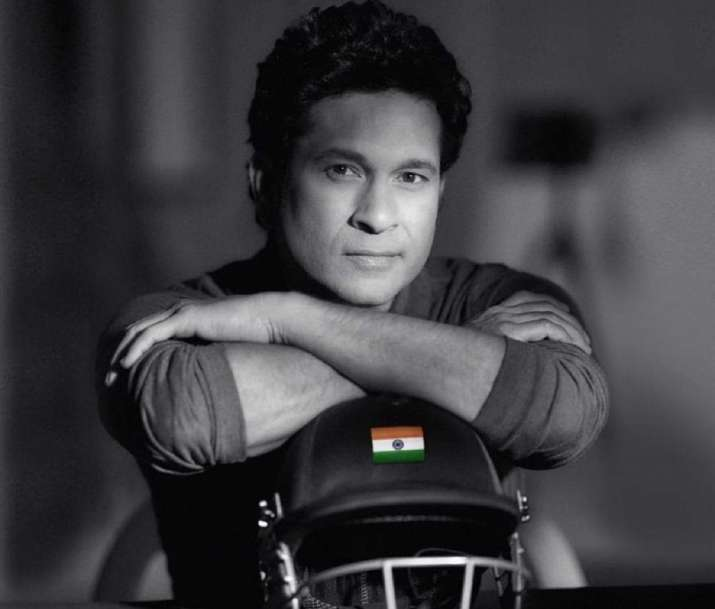

|  |
Sachin Ramesh Tendulkar(born 24 April 1973) is an Indian former international cricketer who served as captain of the Indian national team. He is widely regarded as one of the greatest batsmen in the history of cricket.[6] He is the highest run scorer of all time in international cricket, and the only player to have scored one hundred international centuries, the first batsman to score a double century in a One Day International (ODI), the holder of the record for the most runs in both Test and ODI cricket, and the only player to complete more than 30,000 runs in international cricket.[7] In 2013, he was the only Indian cricketer included in an all-time Test World XI named to mark the 150th anniversary of Wisden Cricketers' Almanack.[8][9][10] He is affectionately known as "Little Master" or "Master Blaster" |
Permanent Address: 19-A, Perry Cross Road, Bandra (West), Mumbai, Maharashtra.400050
Contact Number: 022-26457576/p>